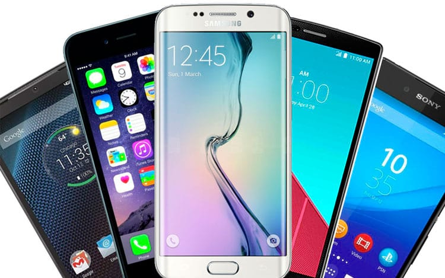

Smartphones
 Visite a páginaSmartphone é um telefone celular, e significa telefone inteligente, em português, e é um termo de origem inglesa. O smartphone é um celular com tecnologias avançadas, o que inclui programas executados um sistema operacional, equivalente aos computadores. Os smartphones possibilitam que qualquer pessoa possa desenvolver programas para eles, os chamados aplicativos, e existem dos mais variados tipos e para os mais variados objetivos. Um smartphone possui características de computadores, como hardware e software, pois são capazes de conectar redes de dados para acesso à internet, sincronizar dados como um computador, além da agenda de contatos.